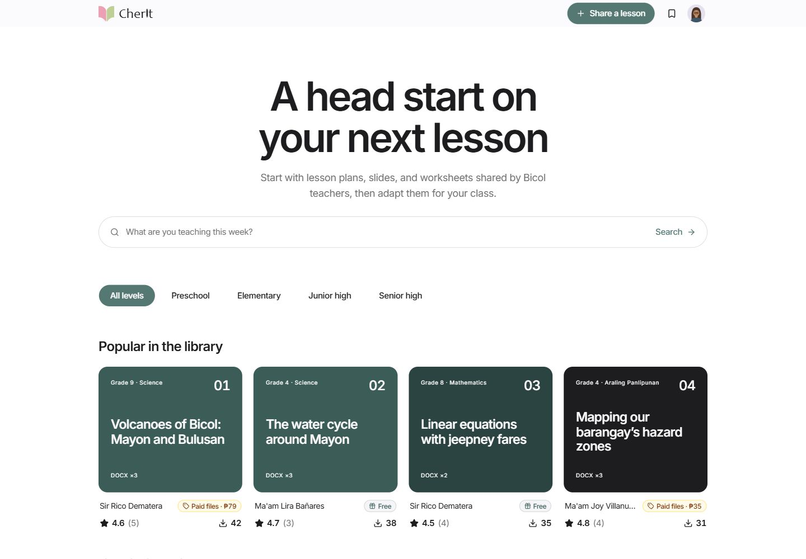
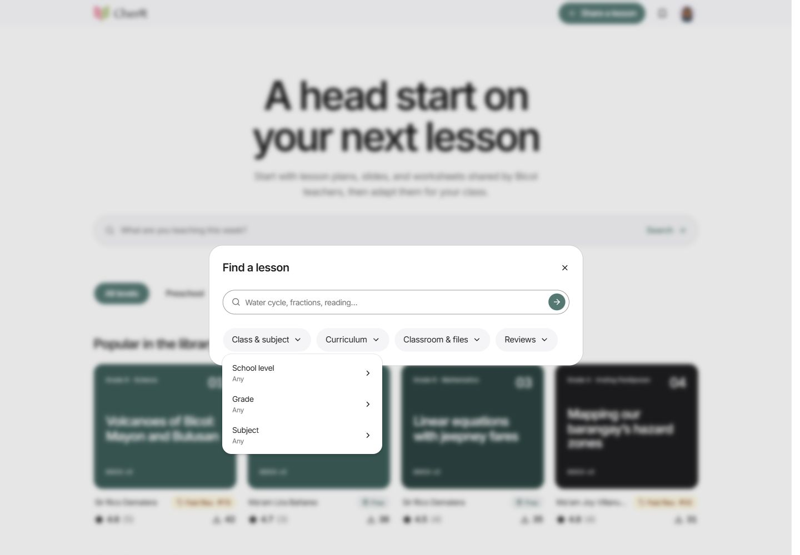

Web application · Collaborative hackathon prototype
CherIt.
A lesson-pack library for Bicol public-school teachers.

The problem
Teachers need materials that match their topic, class level, and available classroom resources. In the team’s interviews, teachers described gathering and adapting materials across different sources and uncertainty about the quality of some materials they found online.
CherIt explored bringing discovery, pack details, and contributor credit into one interface. Those interviews informed a prototype; they did not measure changes in workload or learning outcomes.
My role
I contributed website direction and feature design alongside JP, and helped with product decisions, QA, and the presentation. We shaped the architecture and features as a team. Development used AI assistance.
JP was the technical lead. CJ led design and creative work. My documented team role was product, QA, and presentation.
Keep browsing simple
The homepage presents school-level browsing and a single search entry. The search dialog groups filters for class and subject, curriculum, classroom needs and files, and reviews. This lets someone browse a collection or open the more specific controls when needed.
On the pack page, author, version, ratings, and file details provide context for deciding whether to preview, download, or adapt a pack.

What the prototype demonstrates
The React and TypeScript application runs locally in one browser. Search, filters, previews, downloads, and local persistence are part of the prototype. The screenshots use fictional sample catalogue data. Personas, seeded activity, verification, and payment flows are simulated.
The team’s project notes document checks of local discovery, preview, and download flows. This portfolio capture checked the homepage and search controls. It does not establish a public launch, real adoption, payments, or expert verification.